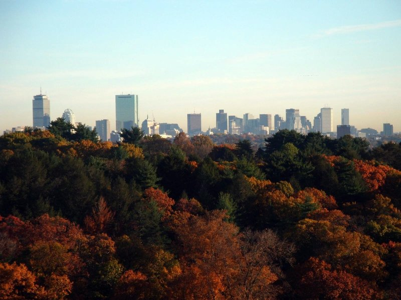

Jag älskar Boston. Ibland påminner det mig om Stockholm, ungefär samma storlek, och det är ganska lätt att ta sig runt utan bil. Men jag saknar Stockholms riktiga natur och hur promenadvänligt det är där.
Min mamma kom från Filippinerna till New Jersey, där hon träffade min pappa som hade bott där hela sitt liv. Sedan flyttade de till Boston innan de fick barn. Att växa upp i Boston är den största gåvan jag har fått, tack vare utbildningen och friheten att leva utan bil. Jag har fortfarande inte körkort, haha.
De här platserna är förstås bara en liten del av den fantastiska staden, men de är mina favoritplatser, ställena där jag växte upp.
Tolv hållplatser
Välj en hållplats för att utforska
Håll muspekaren över en nål · Klicka för att utforska
En personlig karta över Boston, byggd kring platser som faktiskt betyder något för mig. Inte kurerad för turister, inte rankad av Yelp. Bara de hörnen av staden som jag promenerar genom, träffar folk i och alltid återvänder till.
Foton tagna av mig runt om i Boston. Byggd med vanlig HTML, CSS och JavaScript, med en interaktiv karta från Leaflet och OpenStreetMap. Hostad på GitHub Pages.
Gjord med omsorg i Cambridge, MA.